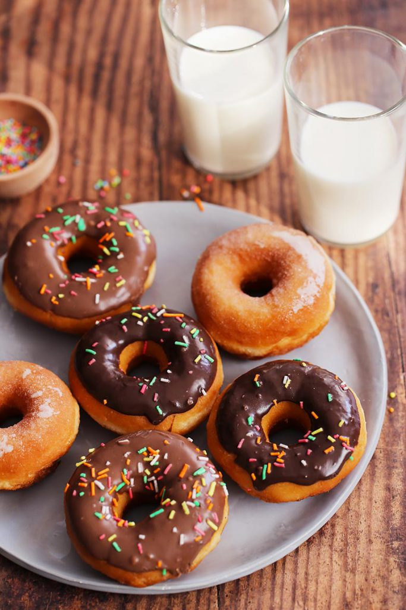

Doughnuts

Description
A doughnut or donut is a type of food made from leavened fried dough.It is popular in many countries and is prepared in various forms as a sweet snack that can be homemade or purchased in bakeries, supermarkets, food stalls, and franchised specialty vendors. Doughnut is the traditional spelling, while donut is the simplified version; the terms are often used interchangeably.
Doughnuts are usually deep fried from a flour dough, but other types of batters can also be used. Various toppings and flavorings are used for different types, such as sugar, chocolate or maple glazing. Doughnuts may also include water, leavening, eggs, milk, sugar, oil, shortening, and natural or artificial flavors.
Ingredients:
- 500g strong white bread flour
- 60g golden caster sugar
- 15g fresh yeast, crumbled
- 4 eggs
- zest 1/2 lemon
- 2 tsp fine sea salt
- 125 softened unsalted butter
- about 2 litres sunflower oil, for deep-frying
- caster sugar, for tossing
Steps:
- Put 150g water and all the dough ingredients, apart from the butter, into the bowl of a mixer with a beater paddle. Mix on a medium speed for 8 mins or until the dough starts coming away from the sides and forms a ball. Turn off the mixer and let the dough rest for 1 min.
- Start the mixer up again on a medium speed and slowly add the butter to the dough – about 25g at a time. Once it is all incorporated, mix on high speed for 5 mins until the dough is glossy, smooth and very elastic when pulled.
- Cover the bowl with cling film or a clean tea towel and leave to prove until it has doubled in size. Knock back the dough in the bowl briefly, then re-cover and put in the fridge to chill overnight.
- The next day, take the dough out of the fridge and cut it into 50g pieces (you should get about 20).
- Roll the dough pieces into smooth, tight buns and place them on a floured baking tray, leaving plenty of room between them, as you don’t want them to stick together while they prove.
- Cover loosely with cling film and leave for 4 hrs or until doubled in size. Fill your deep-fat fryer or heavy-based saucepan halfway with oil. Heat the oil to 180C.
- When the oil is heated, carefully slide the doughnuts from the tray using a floured pastry scraper. Taking care not to deflate them, put them into the oil. Do 2-3 per batch, depending on the size of your fryer or pan.
- Fry for 2 mins each side until golden brown – they puff up and float, so you may need to gently push them down after about 1 min to help them colour evenly.
- Remove the doughnuts from the fryer and place them on kitchen paper.
- Toss the doughnuts in a bowl of caster sugar while still warm. Repeat the steps until all the doughnuts are fried, but keep checking the oil temperature is correct – if it is too high, they will burn and be raw in the middle; if it is too low, the oil will be absorbed into the doughnuts and they will become greasy. Set aside to cool before filling.
- To fill the doughnuts, make a hole with a small knife in the crease of each one, anywhere around the white line between the fried top and bottom.
- Fill a piping bag with your filling and pipe into the doughnut until nicely swollen – 20-50g is the optimum quantity, depending on the filling; cream will be less, because it is more aerated. After filling, the doughnuts are best eaten straight away, but will keep in an airtight tin.
- Whisk 150g dark (70%) chocolate into the milk. Finish with half the cream.